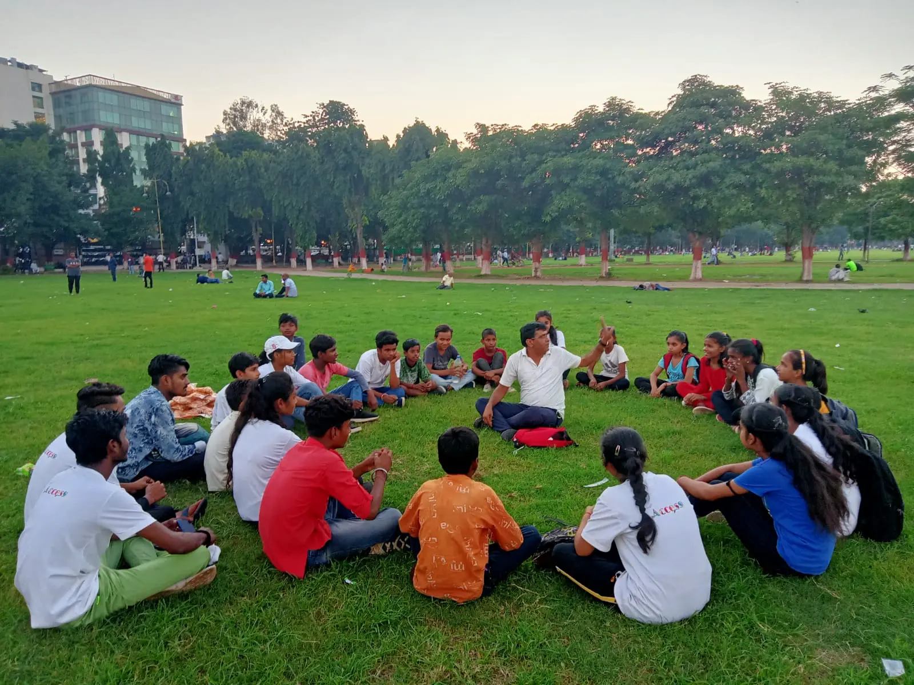
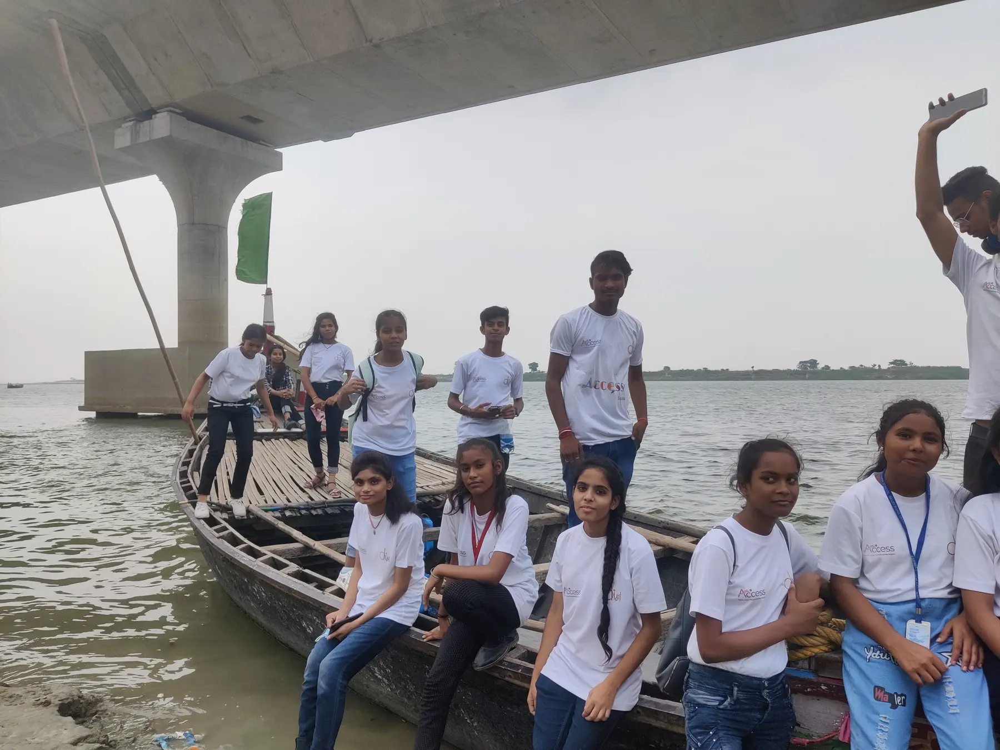
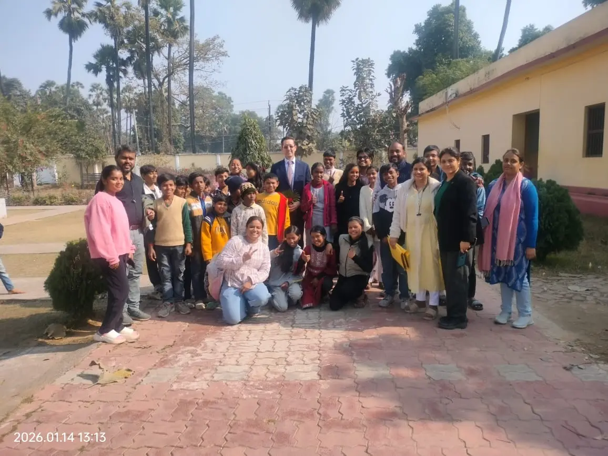

English for everyday and professional life
Students read the news together and took part in group discussions. They also wrote formal emails, prepared CVs and practised job interviews.
Patna · Two phases · 2020–2028
At Access, English is not taught only through grammar books. Students discuss a film, write an email, interview one another, rehearse a play and present work they have made together.
Our first Access group brought together 50 young people in Patna. A second group of 50 first-year STEM students began classes at NIT Patna in September 2026. In both programmes, students use English in discussions, presentations and projects.
Read about the first group
The first programme · from 2020
When classes began in September 2020, everyone met on Zoom. As restrictions eased, the students began meeting in person. They worked in two groups of 25 until the programme closed.
Students read the news together and took part in group discussions. They also wrote formal emails, prepared CVs and practised job interviews.
A film could lead to a conversation about gender, identity or the media. Students also compared parts of everyday life in India and the United States.
Students made photographs and films, wrote poetry, performed music and rehearsed plays. English was something they needed in order to finish and share the work.
During the 2022 intensive visit, the group visited places connected with art and history, took part in theatre and team activities, and used English away from the classroom.

By the end of the first programme
Families watched the students perform a play, recite poetry, share music and screen a film. The students also spoke about what it had been like to begin the programme on Zoom.
Their English was assessed when they joined and again when they left.
They came back each week to share dance, music and craft with younger children at KHEL.
Some Diksha alumni later went to the United States on exchange programmes, including the Community College Initiative Program.
Learning at NIT Patna
Classes began in late September 2026. The activities below come from the programme plan; this page will carry the students’ own projects and reflections as the year goes on.
Students will practise explaining scientific and technical ideas in English, then respond to questions from others.
Applied projects, an innovation challenge and a hackathon will give students work to plan and complete together.
Students will make technical presentations and prepare a final capstone for an audience beyond their own group.
Meetings with educators and professionals, community work and exposure to U.S. academic communication are part of the plan.

The partnership
The first Access programme was implemented by Diksha Foundation with the U.S. Consulate General Kolkata and RELO India.
In the new phase, NIT Patna hosts the students and Diksha runs the programme, with the Regional English Language Office of the U.S. Embassy in New Delhi.
Access in Patna · 2020–2028
The first programme brought together young people from across Patna. Six years later, Access is returning in a different setting, with first-year students at NIT Patna.
September 2020
Fifty young people start learning online during the pandemic.
Closing event
They plan and lead the final event through theatre, poetry, music and film.
September 2026
The programme is inaugurated on 22 September and classes begin on 26 September, for 200 hours of project-based English learning.
2028
Students complete their planned English learning and capstone work.
Follow the new cohort
We will add the students’ work to this page as the programme goes on.